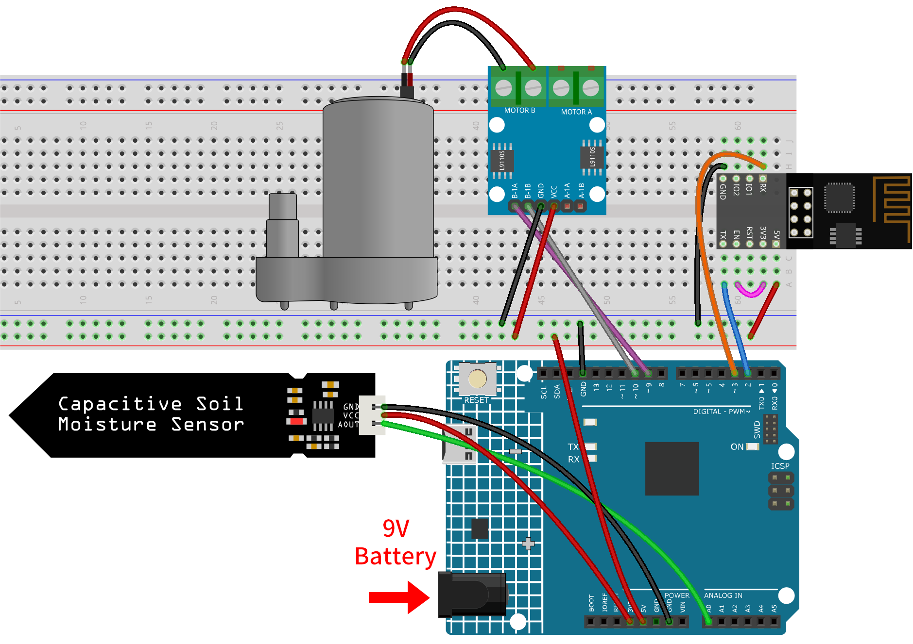
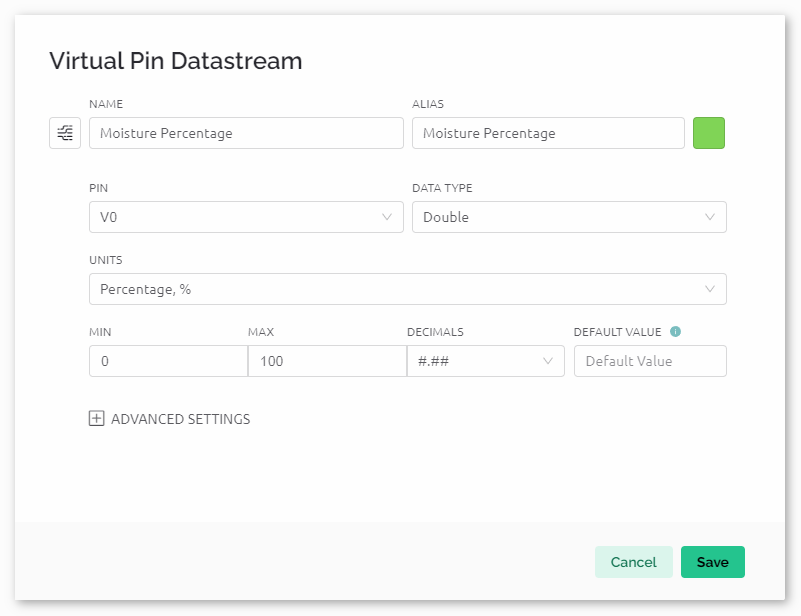
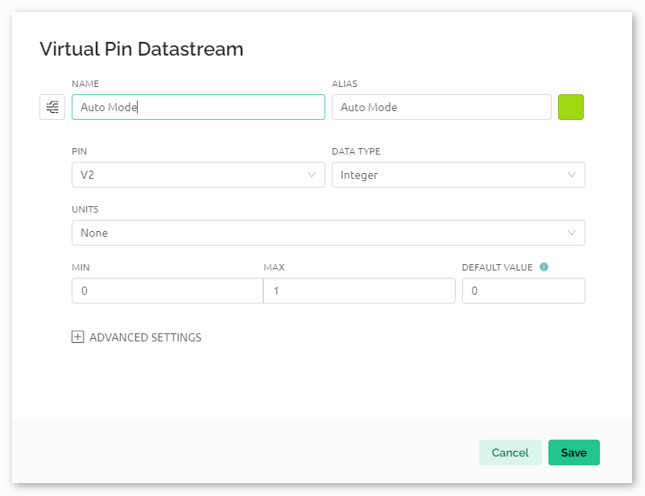
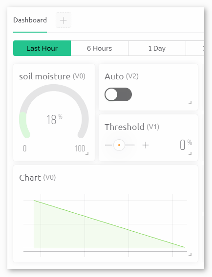

Bemerkung
Hallo und willkommen in der SunFounder Raspberry Pi & Arduino & ESP32 Enthusiasten-Gemeinschaft auf Facebook! Tauchen Sie tiefer ein in die Welt von Raspberry Pi, Arduino und ESP32 mit anderen Enthusiasten.
Warum beitreten?
Expertenunterstützung: Lösen Sie Nachverkaufsprobleme und technische Herausforderungen mit Hilfe unserer Gemeinschaft und unseres Teams.
Lernen & Teilen: Tauschen Sie Tipps und Anleitungen aus, um Ihre Fähigkeiten zu verbessern.
Exklusive Vorschauen: Erhalten Sie frühzeitigen Zugang zu neuen Produktankündigungen und exklusiven Einblicken.
Spezialrabatte: Genießen Sie exklusive Rabatte auf unsere neuesten Produkte.
Festliche Aktionen und Gewinnspiele: Nehmen Sie an Gewinnspielen und Feiertagsaktionen teil.
👉 Sind Sie bereit, mit uns zu erkunden und zu erschaffen? Klicken Sie auf [hier] und treten Sie heute bei!
Automatisches Bewässerungssystem mit Blynk
Dieses Projekt demonstriert ein automatisiertes Bewässerungssystem, das Bodenfeuchtesensoren und Wasserpumpen nutzt. Die Blynk-App dient der Benutzerinteraktion und empfängt Daten zur Bodenfeuchte, während sie den Bewässerungsschwellenwert und den Status des Automatikmodus an das System sendet. Wenn die Bodenfeuchte unter den eingestellten Schwellenwert im Automatikmodus fällt, aktiviert das System die Wasserpumpe.
1. Schaltung aufbauen
Bemerkung
Das ESP8266-Modul benötigt einen hohen Stromfluss für einen stabilen Betrieb. Stellen Sie daher sicher, dass die 9V-Batterie angeschlossen ist.


2. Blynk konfigurieren
Bemerkung
Wenn Sie mit Blynk noch nicht vertraut sind, empfehlen wir dringend, zunächst diese beiden Tutorials zu lesen. Einführung in Blynk ist ein Einsteigerleitfaden zu Blynk, der auch die Konfiguration des ESP8266 und die Registrierung bei Blynk beinhaltet. Flammenwarnsystem mit Blynk ist ein einfaches Beispiel, aber die Schritterklärungen sind detaillierter.
2.1 Vorlage erstellen
Zuerst müssen wir eine Vorlage in Blynk erstellen. Legen Sie eine „Auto watering system“ Vorlage an.
2.2 Datenströme
Erstellen Sie Datastreams vom Typ Virtual Pin auf der Datastreams-Seite, um Daten vom ESP8266 und dem Uno R4 Board zu empfangen.
Virtuellen Pin V0 nach folgendem Schema erstellen:
Benennen Sie den Virtual Pin V0 in Moisture Percentage um. Setzen Sie den DATA TYPE auf Double und MIN und MAX auf 0 und 100. Die UNITS sollen Percentage,% sein.

Virtuellen Pin V1 nach folgendem Schema erstellen:
Benennen Sie den Virtual Pin V1 in Water Threshold um. Setzen Sie den DATA TYPE auf Double und MIN und MAX auf 0 und 100. Die UNITS sollen Percentage,% sein.

Virtuellen Pin V2 nach folgendem Schema erstellen:
Benennen Sie den Virtual Pin V2 in Auto Mode um. Setzen Sie den DATA TYPE auf Integer und MIN und MAX auf 0 und 1.



2.3 Web-Dashboard
Wir müssen auch das Web-Dashboard konfigurieren, um mit dem automatischen Bewässerungssystem interagieren zu können.
Richten Sie das Web-Dashboard entsprechend dem folgenden Schema ein. Wir verwenden Widgets wie Beschriftungen, Anzeigen, Schalter, Schieberegler und Diagramme. Achten Sie darauf, jedes Widget seinem entsprechenden virtuellen Pin zuzuordnen.


3. Den Code ausführen
Öffnen Sie die Datei
07-Auto_watering_system.inoim Pfadultimate-sensor-kit\iot_project\wifi\07-Auto_watering_system, oder kopieren Sie diesen Code in die Arduino IDE.Legen Sie ein Blynk-Gerät mit der Vorlage „Auto watering system“ an. Anschließend ersetzen Sie die Werte für
BLYNK_TEMPLATE_ID,BLYNK_TEMPLATE_NAMEundBLYNK_AUTH_TOKENdurch Ihre eigenen.#define BLYNK_TEMPLATE_ID "TMPxxxxxxx" #define BLYNK_TEMPLATE_NAME "Auto watering system" #define BLYNK_AUTH_TOKEN "xxxxxxxxxxxxx"
Sie müssen auch die
ssidund dasPasswortdes von Ihnen verwendeten WLANs eingeben.char ssid[] = "Ihr_SSID"; char pass[] = "Ihr_Passwort";
Nach der Auswahl des richtigen Boards und Ports klicken Sie auf den Hochladen-Button.
Öffnen Sie den seriellen Monitor (Baudrate auf 115200 einstellen) und warten Sie auf eine Meldung, die eine erfolgreiche Verbindung anzeigt.

Bemerkung
Falls die Meldung
ESP is not respondingerscheint, befolgen Sie bitte diese Schritte.Stellen Sie sicher, dass die 9V-Batterie angeschlossen ist.
Setzen Sie das ESP8266-Modul zurück, indem Sie den Pin RST für 1 Sekunde mit GND verbinden und dann wieder trennen.
Drücken Sie den Reset-Knopf auf dem R4-Board.
Manchmal müssen Sie die oben genannten Schritte 3-5 Mal wiederholen. Bitte haben Sie Geduld.
4. Code-Erläuterung
Einrichtung der Blynk-Cloud und Import der Bibliotheken
In diesen Zeilen werden die eindeutigen IDs und Tokens festgelegt, die zur Identifizierung und Authentifizierung Ihres Arduino-Geräts mit der Blynk-Cloud notwendig sind. Zusätzlich werden wichtige Bibliotheken für die Verwendung des ESP8266-WiFi-Moduls, Blynk-Funktionalitäten und Software-Serienschnittstelle eingebunden.
#define BLYNK_TEMPLATE_ID "TMPLxxxxxx" #define BLYNK_TEMPLATE_NAME "Auto watering system" #define BLYNK_AUTH_TOKEN "xxxxxxxxxxxxxxx" #define BLYNK_PRINT Serial #include <ESP8266_Lib.h> #include <BlynkSimpleShieldEsp8266.h> #include <SoftwareSerial.h>
WiFi- und Hardware-Konfiguration
Hier werden die WLAN-Zugangsdaten (
ssidundpass) definiert. Die Pins2(RX) und3(TX) sind für die Software-Serienschnittstelle zwischen dem Arduino und dem ESP8266 konfiguriert. Die Baudrate für diese Kommunikation ist auf115200festgelegt.char ssid[] = "Ihr_WLAN-Name"; char pass[] = "Ihr_Passwort"; SoftwareSerial EspSerial(2, 3); #define ESP8266_BAUD 115200 ESP8266 wifi(&EspSerial);
Definition von Pins und globalen Variablen
Die Pins für die Steuerung der Wasserpumpe und des Bodenfeuchtesensors werden hier zusammen mit globalen Variablen für Sensorwerte, Schwellenwerte und Betriebsmodi festgelegt.
Sie sollten Ihre eigenen Werte für
moistureInAirundmoistureInWateranhand Ihrer tatsächlichen Bedingungen messen. Um zu verhindern, dass der berechnetemoisturePercentageden Bereich von 0-100% überschreitet, korrigieren Sie den Wert fürmoistureInAirnach oben und den Wert fürmoistureInWaternach unten, um für Sensorabweichungen zu kompensieren.// Define pin configurations for the water pump const int pump1A = 9; const int pump1B = 10; bool pumpStatus = 0; // 0 indicates OFF, 1 indicates ON // Define the soil moisture sensor const float moistureInAir = 535; // Measure by placing the sensor in air const float moistureInWater = 280; // Measure by immersing the sensor in water const int sensorPin = A0; int sensorValue = 0; // Stores the raw sensor value int autoMode = 0; int waterThreshold = 0; // The soil moisture percentage threshold to activate watering float moisturePercentage = 0; // The calculated soil moisture percentage
Anfangskonfigurationen in der setup()-Funktion
Hier werden zwei Timer konfiguriert:
Mit
timer.setInterval(10000L, updateDataTimer)wird das Zeitintervall für die FunktionupdateDataTimer()auf alle 10000ms eingestellt. Sie können den ersten Parameter anpassen, um das Intervall zwischen den Ausführungen vonupdateDataTimer()zu ändern.Mit
timer.setInterval(35000L, autoWaterTimer)wird das Zeitintervall für die FunktionautoWaterTimer()auf alle 35000ms eingestellt. Auch hier können Sie den ersten Parameter anpassen.
void setup() { pinMode(pump1A, OUTPUT); // set pump1A as output pinMode(pump1B, OUTPUT); // set pump1B as output digitalWrite(pump1B, LOW); // Keep pump1B low Serial.begin(115200); // Start serial communication at 115200 baud rate for debugging EspSerial.begin(ESP8266_BAUD); // Set ESP8266 baud rate delay(10); // Configure Blynk and connect to WiFi Blynk.config(wifi, BLYNK_AUTH_TOKEN); Blynk.connectWiFi(ssid, pass); // Configure timer events timer.setInterval(10000L, updateDataTimer); // Update sensor data every 10 seconds timer.setInterval(35000L, autoWaterTimer); // Check watering conditions every 35 seconds }
loop() Funktion
Diese kontinuierlich laufende Schleife ermöglicht es der Blynk-Bibliothek, nach Aktualisierungen zu suchen und die definierten Zeitereignisse zu verarbeiten.
void loop() { Blynk.run(); timer.run(); }
Interaktion mit der Blynk-App
Diese Funktionen werden durch bestimmte Interaktionen mit der Blynk-App ausgelöst:
BLYNK_CONNECTED(): Wird aufgerufen, wenn das Gerät eine Verbindung zu Blynk herstellt. Synchronisiert die Anfangszustände der virtuellen Pins.BLYNK_WRITE(V1): Wird ausgelöst, wenn sich der virtuelle Pin 1 ändert (Wasserschwellwert).BLYNK_WRITE(V2): Wird ausgelöst, wenn sich der virtuelle Pin 2 ändert (Automatik-Modus Status).
// This function is called every time the device is connected to the Blynk.Cloud BLYNK_CONNECTED() { Blynk.syncVirtual(V1); // Sync water threshold Blynk.syncVirtual(V2); // Sync auto mode status } // This function is called every time the Virtual Pin 1 state changes BLYNK_WRITE(V1) { waterThreshold = param.asInt(); // Update watering threshold Serial.print("Received threshold. waterThreshold:"); Serial.println(waterThreshold); } // This function is called every time the Virtual Pin 2 state changes BLYNK_WRITE(V2) { autoMode = param.asInt(); // Update auto mode status if (autoMode == 1) { Serial.println("The switch on Blynk has been turned on."); } else { Serial.println("The switch on Blynk has been turned off."); } }
Timer-Callbacks und automatische Bewässerungslogik
Diese Funktionen steuern die Aufgaben, die von den Timern ausgeführt werden:
updateDataTimer(): RuftsendData()auf, um aktuelle Feuchtigkeitsdaten an Blynk zu senden.autoWaterTimer(): RuftautoWater()auf, um zu prüfen, ob Bewässerung erforderlich ist.sendData(): Berechnet den Bodenfeuchtigkeitsprozentsatz, protokolliert ihn und sendet ihn an die Blynk-App.autoWater(): Überprüft, ob der Boden auf Basis des festgelegten Schwellwerts und des Automatik-Modus bewässert werden muss.
void updateDataTimer() { sendData(); } void autoWaterTimer() { autoWater(); } // Function to send sensor data to Blynk app void sendData() { // Calculate soil moisture percentage sensorValue = analogRead(sensorPin); moisturePercentage = 1 - (sensorValue - moistureInWater) / (moistureInAir - moistureInWater); Serial.println("-----------------------------"); Serial.println("Update soil moisture data ..."); Serial.print("sensorValue:"); Serial.print(sensorValue); Serial.print(" moisturePercentage:"); Serial.println(moisturePercentage * 100); // Send moisture percentage to Blynk app Blynk.virtualWrite(V0, moisturePercentage * 100); } // Function to control automatic watering based on soil moisture and user settings void autoWater() { if (autoMode == 1 && moisturePercentage * 100 < waterThreshold) { if (!pumpStatus) { turnOnPump(); Serial.println("-----------------------------"); Serial.println("Watering..."); // Turn off pump after 2 seconds timer.setTimeout(2000L, turnOffPump); } } }
Pumpensteuerungsfunktionen
These functions directly control the operation of the water pump:
turnOnPump(): Activates the pump.turnOffPump(): Deactivates the pump.
// Function to turn on the water pump void turnOnPump() { digitalWrite(pump1A, HIGH); pumpStatus = 1; } // Function to turn off the water pump void turnOffPump() { digitalWrite(pump1A, LOW); pumpStatus = 0; }
Referenzen